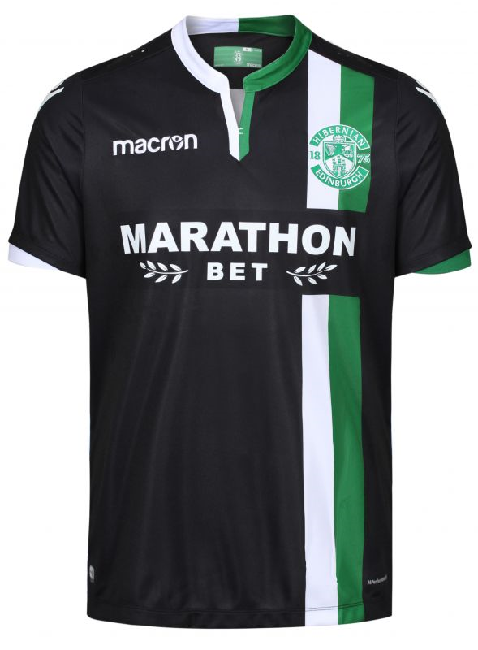
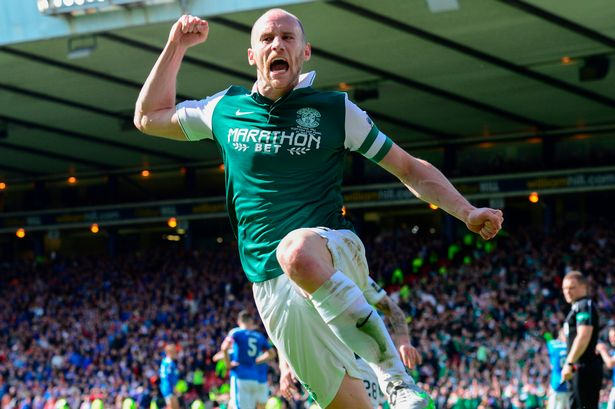
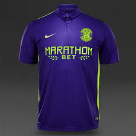
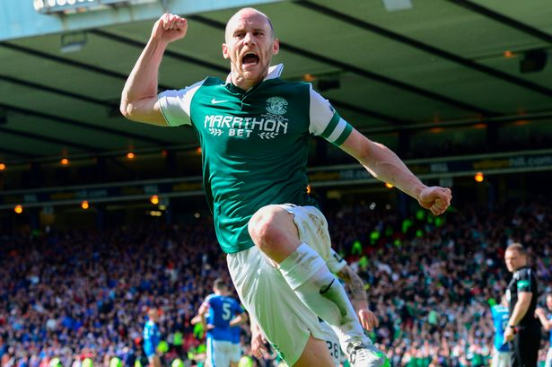
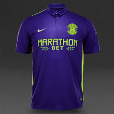

This slide will be all about Hibernians best kits since 2016
Back to home pageThe 2016 shirt has to be the most memorable shirt but dont think it is the best looking but has to go in this because of the Scottish cup.
The 2017/18 seasons away strip is my favorite strip ever from hibs the home strip was good as well but the away strip is the best.
This seasons kits are one of my favorite hibs kits the home and away kit are really nice and its to see the Hibernain foundation community on the front it is a very smart kit.
the 1994/96 kit was a very colorful kit and the material looks like paper but i really like the design
2015/16 season was a bright and colorful kit it was a frenetic season but a very solid one.
 


